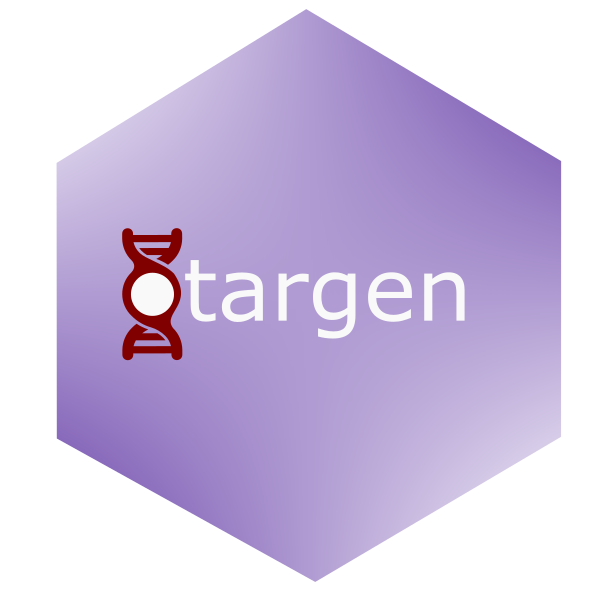

Retrieve clinical reports (Open Targets Mira) for a drug or by report ID.
Source:R/clinicalReportsQuery.R
clinicalReportsQuery.RdThis function queries the Open Targets GraphQL API to retrieve the harmonised clinical reports produced by the Open Targets Mira pipeline. Clinical reports are the individual trial, drug-label and regulatory records that underpin the Platform's drug-indication ("Clinical Precedence") evidence, aggregated from sources such as ClinicalTrials.gov (via AACT), DailyMed, the EMA and PMDA. See the Open Targets blog post Introducing Open Targets Mira (https://blog.opentargets.org/introducing-open-targets-mira/) for background.
Value
Returns a tibble with one row per clinical report and the following columns:
reportId: Clinical report identifier.drugId: The queried ChEMBL ID (NAwhen fetching by report ID).title: Report / trial title.type: Report type ("INDICATION" or "SAFETY").clinicalStage: Harmonised clinical stage.trialPhase: Trial phase.trialOverallStatus: Overall trial status.trialPrimaryPurpose: Primary purpose of the intervention.year: Year the report refers to.origin: Nature of the source record (e.g., CLINICAL_TRIAL).provider: Distributor of the data (e.g., AACT, EMA, PMDA).source: Primary source (e.g., ClinicalTrials.gov).sponsorName: Trial sponsor name.sponsorClass: Sponsor agency class.countries: Comma-separated countries where the report was conducted.diseaseIds/diseaseNames: Comma-separated diseases associated with the report.drugIds/drugNames: Comma-separated drugs mentioned in the report.url: Link to the source record.
Returns NULL if no clinical reports are found.
Details
Provide exactly one of chemblId or reportIds. With
chemblId, the function walks the drug's indications and returns every
distinct clinical report linked to that drug. With reportIds, it
fetches the named reports directly via the Platform's clinicalReports
root query.
Examples
if (FALSE) { # \dontrun{
# All clinical reports linked to imatinib's indications
clinicalReportsQuery(chemblId = "CHEMBL941")
# Fetch specific reports by ID
clinicalReportsQuery(reportIds = c("nct00080665", "nct00471497"))
} # }